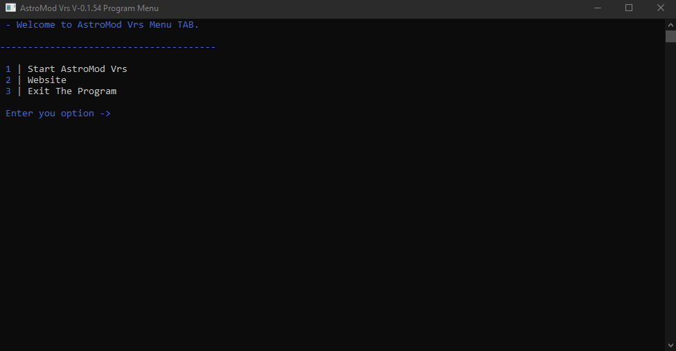
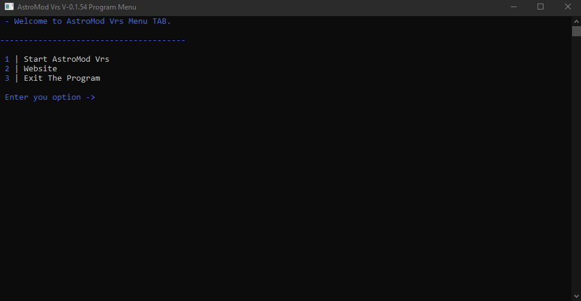

Basic Info for AstroMod Vrs
1. Launch AstroMod Vrs.
2. Choose the option "Start AstroMod Vrs".
3. Enter the keys according to the crypto you want to mine.
4. Wait for the program to find an H.
5. When the H was found start Crypto-converter.exe.
6. And finally convert your crypto.
Keys Info for AstroMod Vrs
1. AstroCoins key = hh8n0shNa63FhxR5eHcH
2. BitCoins key = hBiH70viK9KvG7QFkfg9
3. DogeCoins key = Hhvb3j0csG9d3dgu36g5
4. Ether key = HHetr5cTG6JcdL0Cvb6f
 
